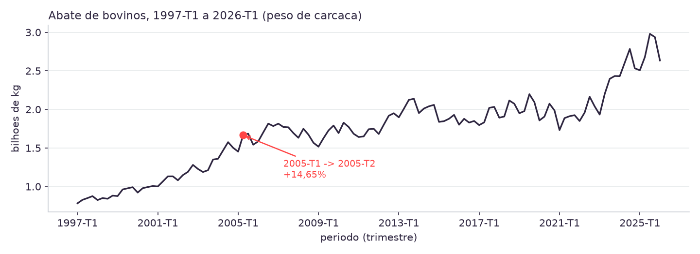
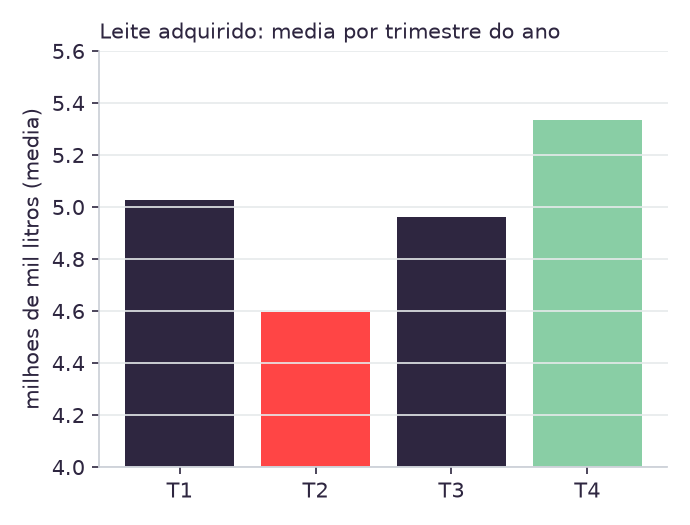

1. Por que Pandas agora
A Aula 01 leu abate_bovinos.csv com csv.reader, de propósito:
uma lista de tuplas, sem biblioteca de dados, para o contrato de colunas
(periodo, valor, unidade) ficar visível linha por
linha. A Aula 02 repetiu essa leitura cinco vezes, guardando o resultado em um dicionário
de listas, para medir os seis pilares de qualidade sem Pandas.
As duas aulas fizeram isso de propósito, não por falta da biblioteca.
Cada operação que hoje vira uma chamada de método (describe(),
.mean(), .isna()) já foi escrita à mão em Python puro nas duas
aulas anteriores. Quem não entendeu o que describe() está calculando por
dentro não vai notar quando ele calcular a coisa errada.
O que muda de verdade. Não é o resultado (os números batem, célula a célula, com o que a Aula 02 calculou na mão). O que muda é que uma operação vetorizada sobre 117 ou 157 linhas roda de uma vez, sem laço explícito em Python, e isso é o que vai permitir, a partir da Aula 04, trabalhar com features de defasagem sobre as cinco séries ao mesmo tempo.
2. DataFrame, tipos de coluna e describe()
pandas.read_csv("dados/abate_bovinos.csv") devolve um
DataFrame: uma tabela com índice de linha e colunas tipadas.
df.dtypes mostra o que o Pandas inferiu de cada coluna do contrato:
periodo object # string, "2025-T4"
valor float64 # numero
unidade object # string, categoriaperiodo e unidade chegam como object (texto),
não como categoria nem como data. Isso é o comportamento correto aqui: o Pandas tem um tipo
de data (datetime64), mas "2025-T4" não é uma data de calendário,
é um rótulo de trimestre. Converter isso à força para datetime64 obrigaria a
escolher um mês arbitrário dentro do trimestre para representar o período inteiro, o que
reintroduziria exatamente o erro de granularidade que a Aula 02 evitou.
df.describe() resume a coluna numérica em sete estatísticas:
count, mean, std, min,
25%, 50% (a mediana), 75% e max. Rodado
sobre producao_ovos, count aparece como 157,
não 117: é a primeira confirmação, agora em código, de que a série de ovos é dez anos mais
longa que as outras quatro, o mesmo achado que a Aula 02 mediu na mão.
3. Estatística descritiva nas cinco séries
Média, mediana e desvio padrão das cinco séries, calculados com
df["valor"].mean(), .median() e .std():
| série | média | mediana | desvio padrão | coef. de variação | unidade |
|---|---|---|---|---|---|
abate_bovinos | 1,71 bi | 1,79 bi | 488 mi | 28,5% | kg |
abate_suinos | 784 mi | 786 mi | 343 mi | 43,8% | kg |
abate_frangos | 2,30 bi | 2,41 bi | 810 mi | 35,3% | kg |
producao_ovos | 606 mil | 527 mil | 272 mil | 44,9% | mil dúzias |
producao_leite | 4,98 mi | 5,34 mi | 1,37 mi | 27,5% | mil litros |
As cinco faixas (mínimo e máximo, que o describe() também devolve) batem
com a seção "Checagem de sanidade dos valores" de dados/README.md [1]: por
exemplo, o mínimo e o máximo de abate_bovinos ficam entre 782 milhões e quase
3 bilhões de quilogramas, exatamente a faixa documentada.
O coeficiente de variação mistura tendência com oscilação
A última coluna, coeficiente de variação (desvio padrão dividido pela
média), mede dispersão relativa. Repare que producao_ovos e
abate_suinos têm os dois maiores coeficientes (44,9% e 43,8%), acima até de
séries com saltos trimestrais visivelmente mais violentos, como producao_leite
(27,5%, apesar de ter o maior salto trimestral das cinco, na seção 4).
Isso não é contradição: o coeficiente de variação calculado sobre 29 ou 39 anos de série mistura duas coisas diferentes, crescimento de longo prazo (o rebanho suíno e a produção de ovos cresceram muito entre 1987/1997 e 2026) e oscilação trimestre a trimestre. Uma série que cresce de forma constante, sem nenhum salto abrupto, ainda assim tem desvio padrão alto, porque o valor de 2026 está muito longe do valor de 1997. Separar essas duas coisas (tendência e ruído) é o que a Aula 04 começa a fazer com features de defasagem.
4. Numpy: variação percentual e o maior salto
A variação percentual trimestre a trimestre vem de uma linha:
valores = df["valor"].to_numpy()
variacao = (np.diff(valores) / valores[:-1]) * 100np.diff(valores) [3] devolve um array com um elemento a menos que
valores: a posição 0 do resultado é
valores[1] - valores[0], e assim por diante. Por isso a divisão usa
valores[:-1] (todo mundo, menos o último) como denominador: cada diferença é
comparada com o valor anterior a ela, não com o valor seguinte. Errar essa
fatia é o bug mais comum desta célula, e ele não levanta exceção: só desalinha qual
trimestre está sendo comparado com qual.
O maior salto (positivo ou negativo) de cada série, medido em módulo:
| série | maior salto | trimestres | variação média (módulo) |
|---|---|---|---|
abate_bovinos | +14,65% | 2005-T1 → 2005-T2 | 4,81% |
abate_suinos | −13,97% | 2011-T4 → 2012-T1 | 3,83% |
abate_frangos | +10,89% | 2006-T2 → 2006-T3 | 3,13% |
producao_ovos | −6,78% | 1995-T4 → 1996-T1 | 1,91% |
producao_leite | +18,87% | 2000-T3 → 2000-T4 | 7,04% |
Leite tem o salto mais violento das cinco (+18,87%) e também a maior variação média em módulo (7,04%): é a série mais instável trimestre a trimestre, o oposto do que o coeficiente de variação da seção 3 sugeria isoladamente. As duas métricas respondem perguntas diferentes, e um projeto real usa as duas, não uma no lugar da outra.
5. Visualização: sazonalidade e outliers
O gráfico de abate_bovinos no tempo, com o salto de 2005 marcado:

Uma tendência de crescimento não some no meio do gráfico: ela é visível de ponta a
ponta. O ponto de 2005 que o np.diff encontrou (seção 4) aparece como um
degrau na curva, mas repare que não é o ponto mais alto nem o mais baixo
da série: é o maior salto relativo de um trimestre para o seguinte, não o maior
valor absoluto. Confundir "maior salto" com "maior valor" é um erro comum de leitura de
gráfico.
Sazonalidade real: o caso do leite

Agrupando producao_leite por trimestre do ano
(periodo.str.split("-T").str[1]) e tirando a média de cada grupo, aparece um
padrão consistente ao longo de quase trinta anos: T2 é sempre o mais baixo
(4,60 milhões de mil litros, em média) e T4 o mais alto (5,33 milhões).
O que o gráfico prova, e o que ele não prova. Ele prova que existe um padrão sazonal estável: a diferença entre T2 e T4 se repete ano após ano, não é ruído de um ano isolado. Ele não prova a causa. Uma hipótese plausível, e comum na literatura de pecuária leiteira brasileira, é que a maior parte do rebanho leiteiro nacional é criada a pasto, e T2 (abril a junho) cai no período de transição para a seca em boa parte do país, quando a pastagem produz menos forragem, reduzindo a lactação; T4 (outubro a dezembro) coincide com o início do período de chuvas, com mais pasto disponível.
Esta é uma hipótese, não uma conclusão: os cinco CSVs não têm nenhuma coluna de clima, de estação do ano ou de sistema de criação. Confirmá-la exigiria cruzar com outra fonte, exatamente o tipo de armadilha que a Aula 02 discutiu na seção sobre análise diagnóstica (o dado mostra o padrão, a causa está fora dele).
6. Dados faltantes: por que zero aqui
df["valor"].isna().sum() devolve zero nas cinco séries.
Não é acaso, e não é porque o IBGE nunca suprime dado: tools/baixar_dados.py
já filtra, na carga, um conjunto de marcadores que o SIDRA usa para dado ausente ou
suprimido:
AUSENTES = {"...", "..", "-", "X", "*", ""}Qualquer célula que chegasse da API com um desses marcadores já teria sido removida
antes de o CSV ser gravado em dados/. O que isna() confirma aqui
não é "esta base não tem problema de completude": é "o filtro que já existe está
funcionando". A distinção importa porque, em uma base sem esse filtro prévio (a maioria
dos projetos reais chega assim), o mesmo isna() devolveria uma contagem maior
que zero, e aí a decisão seguinte (remover a linha com dropna(), ou preencher
com fillna()) passa a ser uma escolha de modelagem, não um detalhe de leitura.
Essa escolha é assunto da Aula 04.
Zero vazios não é zero risco. A Aula 02 mostrou que
producao_leite passa em isna() e em todos os seis testes de
tools/tests/test_dados.py, e mesmo assim mede o volume que os laticínios
adquiriram, não o que o Brasil produziu. isna() enxerga
célula vazia; não enxerga célula preenchida com o conceito errado. É o mesmo argumento
central da Aula 02, agora confirmado com uma linha de Pandas em vez de um laço.
7. O que levar para a ART.2
A Sprint 1 fecha em 14/08 com a ART.2 UX parte 1 (peso 3) [6], e a Aula 03 é o último encontro antes da entrega. Quatro itens desta aula entram direto na seção de exploração de dados da ART.2:
- O
describe()das cinco séries, com a diferença de completude entre ovos (157 registros) e as outras quatro (117) já explicada, não só citada. - O maior salto de cada série, calculado com
np.diff, com o trimestre exato em que ele acontece. - Ao menos um gráfico por série, com
periodono eixo x, apontando sazonalidade ou outlier, como os dois exemplos desta página. - A confirmação de
isna(), com a ressalva de que zero vazios não é o mesmo que zero risco de qualidade.
Os autoestudos da semana e a leitura complementar estão em
referencias/aula03.html. O laboratório executável
é notebooks/aula03.ipynb, que produz cada tabela e cada gráfico desta página
em código, sobre os cinco CSVs reais.